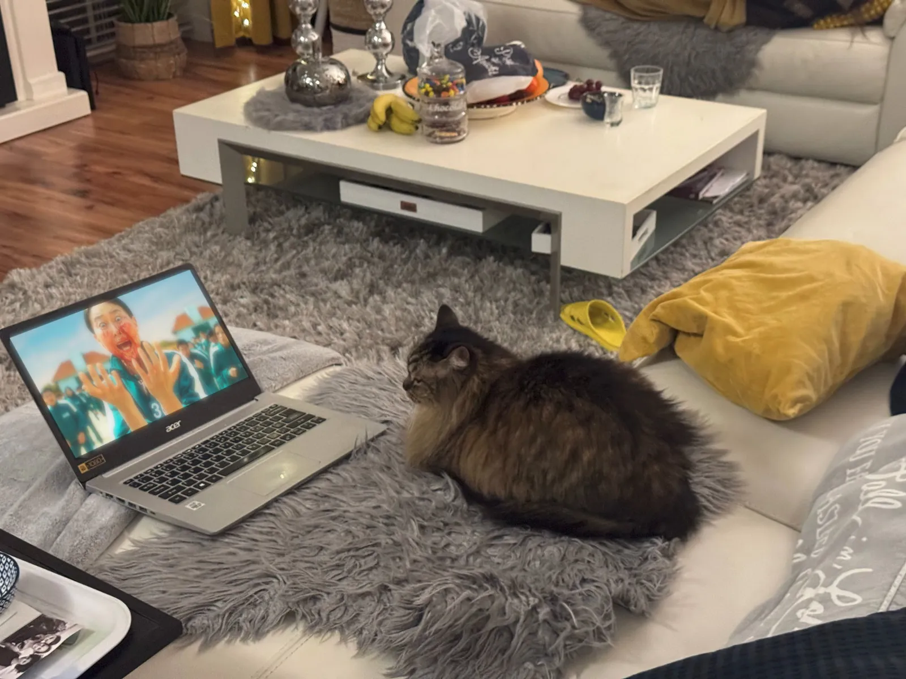
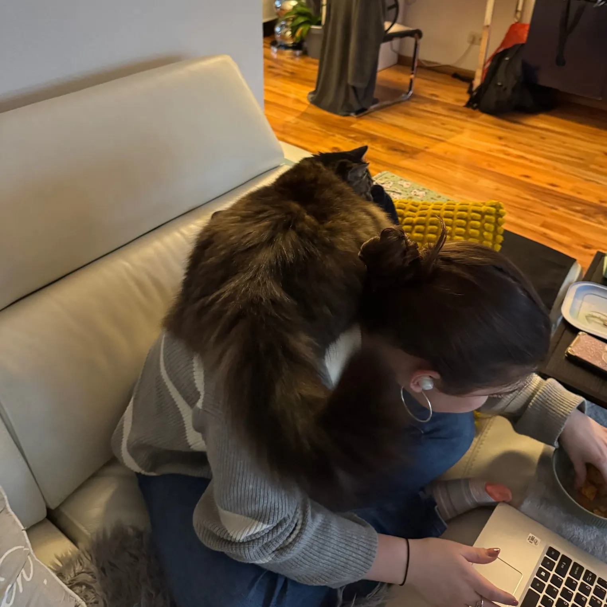

In an eerie twist of events, the notorious feline known as S-I-S-I (or simply Sisi) has taken center stage in a bizarre incident that has rattled the local community. Known for his peculiar habit of watching Squid Game on an old Acer laptop, Sisi has become the unwitting star of this macabre news piece.
Legend has it that before Squid Game graced television screens, there was a time when this cult series was nothing but a myth. During those dark days, Ryan Raven’s sister, Serena—whose choice of entertainment fell on the sinister series Miraculous and Ladybug—found herself embroiled in a horrifying situation. As Serena indulged in salted peanuts, an unexpected turn of events unfolded.
In a moment that can only be described as surreal, Sisi, disturbed by the cursed selection of programming, leaped from his perch to confront Serena. In a chaotic flurry, the feline ended up sitting directly on Serena, capturing an unforgettable moment that has since become a viral sensation. Witnesses say the scene was equal parts tragic and absurd.
Stay tuned as we bring you more updates on this spine-chilling saga. Was it destiny or a cursed fate that led to this macabre encounter? Only time will tell.